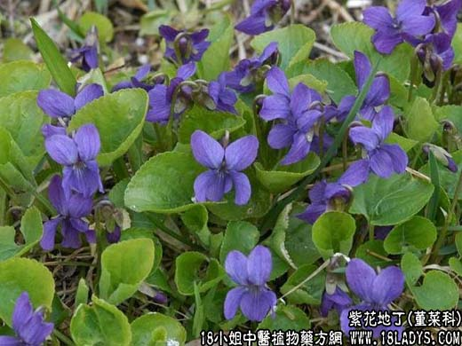

【中药概述】
紫花地丁为堇菜科草本植物紫花地丁的全草。苦、辛，寒。归心、肝经。
1．清热解毒：用于火毒疔疮、痈肿等红肿之证，常配薄公英，银花，菊花，连翘，蚤休，赤芍等，解毒消痈作用尤为增强。如（证治准绳<紫花地丁散>）。
2．蛇虫咬伤：用治毒蛇咬伤。外用可取鲜品捣烂敷局部。
【药效鉴别】
地丁入血分，善解血热壅滞，以消肿痛，凉血解毒，并擅长治疔毒。清热解毒作用较强。
【药理作用】
1.对金黄色葡萄球菌和卡他球菌有较强的抑制作用；
2.对甲型链球菌和肺炎双球菌有不同的抑制作用。
【化学成分】
含甙类、黄酮类、蜡（为虫蜡酸及不饱和酸等酯类）。
【用量用法】
10——80g，水煎服，或入丸、散剂。外用适量
【附】
地丁有几种及每种的特点地丁有几种及每种的特点地丁有几种及每种的特点地丁有几种及每种的特点。
全国常用的地丁有三种：
1．甜地丁：为豆科植物米口代的带根全草入药。特点：个株密被柔毛根长园锥形，表面土黄色或棕红色，断面黄白色，具豆腥气，味淡。叶为单数羽状复叶，小椭圆形，灰绿色；花紫色，荚果棕色，内含小粒肾形黑色种子。
2．苦地丁：为罂粟科植物紫堇的带根全草。特点：主根纤细，叶为二回羽状深裂，藏果，有数粒黑色种子。木品鲜时呈青绿色，干后则呈浅绿色皱缩成一团。味苦而持久。
3．紫花地丁：为堇菜科植物辽草菜及犁头草的全草。特点：根淡黄色很短，叶片披针形或长卵形，有长柄，藏果，三角状裂开，种子淡棕色，味微苦而带粘性。